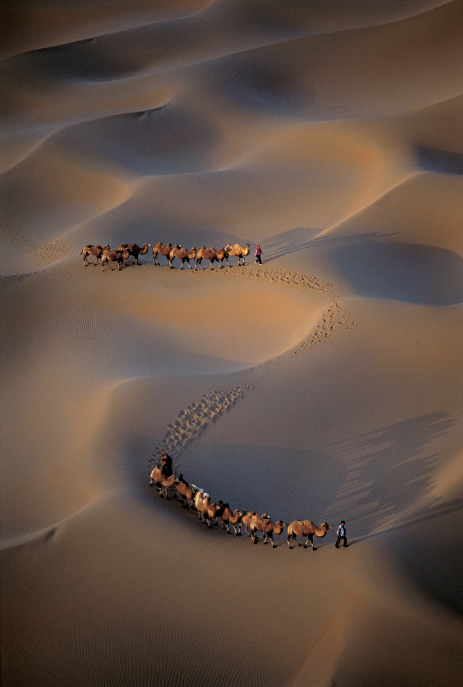

Desertul - Ce plante traiesc? | Marea Carte: Întrebări şi răspunsuri | Jurnal Spiritual
 Sign in General Spiritualitate Leagănul copilăriei Actualitate Educație Eveniment Social Justiție Economie Știinţă Cultură Artă Literatură Teatru Muzică Film Istorie Patrimoniu Stil de viață Interviu Poveşti de viaţă Jurnal de călătorie Reportaj Sănătate Sport Internaţional Europa SUA Rusia Asia În lume Recomandate Video Galerie foto Sign in Welcome! Log into your account numele dvs de utilizator parola dvs V-ați uitat parola? Password recovery Recuperați-vă parola adresa dvs de email 23 septembrie 2020 - 16:37 Autentificați-vă / Înregistrați-vă Sign in Bine ați venit! Autentificați-vă in contul dvs numele dvs de utilizator parola dvs Forgot your password? Get help Password recovery Recuperați-vă parola adresa dvs de email O parola va fi trimisă pe adresa dvs de email. Jurnal Spiritual General Spiritualitate Leagănul copilăriei Actualitate Educație Eveniment Social Justiție Economie Știinţă Cultură Artă Literatură Teatru Muzică Film Istorie Patrimoniu Stil de viață Interviu Poveşti de viaţă Jurnal de călătorie Reportaj Sănătate Sport Internaţional Europa SUA Rusia Asia În lume Recomandate Video Galerie foto Acasă General Ce plante trăiesc în deşert? General Actualitate Știinţă
Ce plante trăiesc în deşert?
1 46996 Facebook Twitter Google+ Pinterest WhatsApp Mască individulă la preț de producător - 3,5 RON(inclusivTVA ) - Click AICIDeşertul nu e o zona propice vietii. Cu toate acestea exista plante ce s-au adaptat conditiilor aprige. În deşert plantele trebuie să supravieţuiască perioade lungi fără apă. De aceea, rădăcinile lor coboară în adâncimea solului, unde găsesc pământ umed. Unele plante, cum este cactusul, au tulpini dense în care înmagazinează apa, în timp ce frunzele sunt cerate, pentru a reduce la minim evaporarea, şi sunt dotate cu spini, pentru a se apăra de animale. Seminţele unora dintre aceste plante se conservă în pământ chiar şi un timp îndelungat, în aşteptarea rarelor ploi. Când acestea sosesc, plantele încolţesc în timp foarte scurt, înfloresc şi mor, răspândind pe pământ alte seminţe.
Deşertul Cum, când, de ce • La ce folosesc spinii?
Spinii sunt în realitate frunze modificate şi servesc plantei nu doar ca intrument de apărare împotriva animalelor. De fapt, planta care are spini expune căldurii solare doar o suprafaţă limitată, reducând, astfel, la minim evaporarea apei din interior. De asemenea, datorită formei lor spinii adună din aer umiditatea nocturnă care, după ce s-a condensat în vârful lor, picură de-a lungul plantei până la rădăcini. Ce sunt plantele suculente?
Se numesc „suculente” plantele capabile să acumuleze apa în interiorul tulpinii şi al frunzelor cărnoase. Cactuşii sunt plante tipice din deşertul din America.
Ferocactusul este o plantă de formă rotunjită, iar florile sale sunt galbene, roşii şi portocalii. Tulpina cu palete a nopalului este acoperită cu spini, aşa cum sunt şi fructele sale.
Recorduri in Deşert
Frunzele agavei ajung la 2 m în lungime, iar floarea are înălţimea de până la 10 m.
Saguaro sau cactusul uriaş atinge 15 m în înălţime, cu spini lungi de 7 cm.
În deşertul din Arizona, un cactus fară braţe, adică fară forma tipică „de candelabru”, a ajuns la înălţimea record de 24 m, cât o casă cu 7 etaje!
Unele exemplare de ferocactus au 3 m înălţime.
Rădăcini eficiente
Deşertul determina rădăcinile plantelor sa se ramifice uneori considerabil în lăţime; în straturile imediat inferioare ale solului, cu scopul de a folosi chiar şi puţina umiditate care se depozitează prin rouă. Din acest motiv plantele cresc foarte departe una de alta.
În deşertul din Africa de Sud creşte „piatra vie”, denumită astfel pentru că extremităţile tulpinelor sale se camuflează în pietre de pe sol.
Frunzele cărnoase ale agavei, cu marginile spinoase care au un ac în vârf, sunt capabile să înmagazineze cantităţi importante de apă. Agava înfloreşte doar o singură dată în viaţă, la vârsta de 10 sau 20 de ani, apoi se ofileşte şi moare.
Marea Carte: Întrebări şi răspunsuri, Ed. Litera Internaţional
Jurnal Spiritual
ETICHETE deşert plante Quo vadis Domine rădăcini spinii Facebook Twitter Google+ Pinterest WhatsApp Articolul precedent Enciclopedia naturii Stațiunea Techirghiol Articolul următor Rugăciunea trebuie să cucerească timpul în toată plinătatea lui Nadia EnachiARTICOLE SIMILARE DE LA ACELAȘI AUTOR
ActualitateS-a întâmplat în 23 septembrie…
Actualitate23 septembrie Echinocţiul de toamnă- ora 10:50 (ora României)
ActualitateS-a întâmplat în 23 septembrie 1930
1 COMENTARIU
MARIANA TURCU noiembrie 5, 2017 at 9:06 pmCe plane sunt certificate, dati mi cateva exemple Va rog
RăspundețiLĂSAȚI UN MESAJ Renunțați la răspuns
Cele mai citite
Milionari în dolari înainte să împlinească 20 de ani. Creativitatea i-a...
Secretele Succesului – Nu critica, nu condamna şi nu te plânge
S-a întâmplat în 20 mai 1882
Sindromul picioarelor neliniştite, afecţiunea care nu te lasă să dormi
Încărcați mai multeActuale
GeneralOricine poate face milostenie
InternaţionalMeteoritul căzut la începutul anului în Rusia, fotografiat la intrarea în...
ActualitateS-a întâmplat în 10 iunie 323 î.Hr.
GeneralCine ştie răspunde! Care este centrul de control al organismului?
ALEGEREA EDITORULUI
S-a întâmplat în 23 septembrie…
23 septembrie Echinocţiul de toamnă- ora 10:50 (ora României)
S-a întâmplat în 23 septembrie 1930
POSTĂRI POPULARE
Seminţele de chia: beneficii pentru sănătate şi contraindicaţii
Învaţă limbajul trupului şi nimeni nu te va mai păcăli
CĂTINA Bolile pe care le vindecă miraculoasa plantă
CATEGORIE POPULARĂ
General 12067 Spiritualitate 9261 Recomandate 6356 Actualitate 5766 Cultură 5302 Internaţional 3360 Educație 2247 Social 2167 Știinţă 2096 DESPRE NOI Revistă de dialog etic, estetic și religios.Proiect cultural-educativ susţinut de către
Fundaţia Împreună pentru Solidaritate Socială.
Contactați-ne: [email protected] URMAȚI-NE General Spiritualitate Leagănul copilăriei Actualitate Educație Eveniment Social Justiție Economie Știinţă Cultură Artă Literatură Teatru Muzică Film Istorie Patrimoniu Stil de viață Interviu Poveşti de viaţă Jurnal de călătorie Reportaj Sănătate Sport Internaţional Europa SUA Rusia Asia În lume Recomandate Video Galerie foto © Copyright 2018- Jurnal Spiritual Translate MAI MULTE ARTICOLE
Soprana Leontina Văduva lansează albumul Verdi-Wagner: Corespondențe
S-a întâmplat în 8 noiembrie 1895
Părintele Teofil Părăian Despre folosirea instrumentelor în muzica bisericească
Din bucătăria veche românească: Budincă de pere și Înghețată de smeură
No HTML5 audio playback capabilities for this browser. Use Chrome Browser! Edit with Live CSS Save Write CSS OR LESS and hit save. CTRL + SPACE for auto-complete.